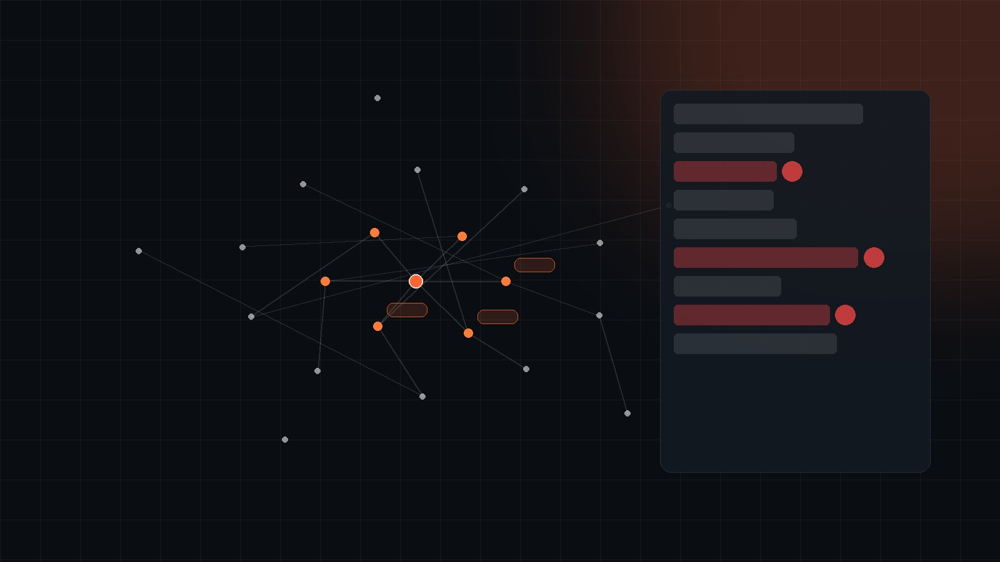

Production-grade custom AI for rail teams.
Our spirit: custom builds that automate your friction points ("X"). Built by AutomateX’s rail-native and AI-native engineering team, fitted to your delivery context, deployed with post-launch support and continuous service.
Custom by design.
No off-the-shelf SaaS. Every build is scoped to your operational context, your data, and the deliverables your team ships. Rail standards are baked in before any code is written.
Production-grade, not pilot.
Validated against your retrospective work. Blind-evaluated against your assurance environment. Deployed inside the systems your team already uses. Every output is cited against its source. Model drift is re-evaluated on a cadence.
Lives in your workflow.
Web-based and integrated with your existing CDE. Empowers the workflows your team already runs, wrapped tightly around your identified friction points ("X") to remove them at source.
Real-world AI, delivering measurable results.
Not slideware. Systems in service on UK rail work today, with the figures they carry.
 DeliveredView full story
DeliveredView full story Drone, 360° camera, and laser scanner captured a national station network in weeks. AI surfaced hidden defects. Trains never stopped.
 LiveView full story
LiveView full story Manual take-off could take up to three weeks per drawing, with no record of how a figure was derived. Live now on a real 400kV overhead line drawing, the automated take-off is matching the team’s own manual measurement to within a fraction of a percent.
 ConceptView full story
ConceptView full story AI co-pilot concept for design reviews, requirements drafting, and verification traceability. Built and demonstrated so the golden thread stays unbroken from design intent through to operational acceptance.
 ConceptView full story
ConceptView full story A rail-specific knowledge graph built on standards, taxonomy, and project history, demonstrated driving tender response quality and speed. Every output cited, grounded in your domain.
 PilotView full story
PilotView full story Agentic delivery of PACE-compliant rail assurance documents. A playbook interviews the engineer, evidence is cited and engineer-verified, and the first draft generates from verified evidence only. Currently in pilot.

In deliveryView full storyHazard logs still live in flat spreadsheets, with the analysis behind every entry buried and the evidence orphaned the moment a project closes out. AutomateX won Innovate UK first-of-a-kind funding to change that: a Digital Hazard Log that turns the register into a queryable, evidence-linked, always-current object model, now in funded delivery.